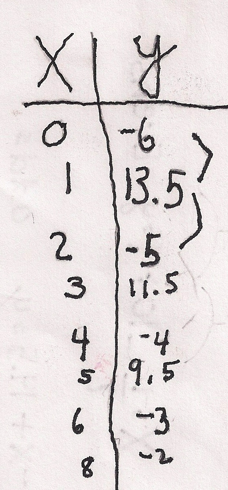

Here is Sara's answer to her Guess My Rule that she made for Don:
front of card

back of card
Notice: Sara made up 2 rules- the first one for even numbers, the second one for odd numbers! Again, she did something which none of Don's students had done before. That's what makes his teaching so enjoyable. She did need a little help to write the rule for the odd numbers, but did it and checked it.
Great job, Sara!